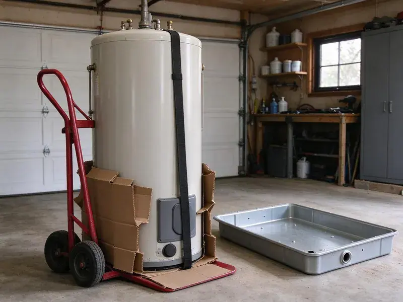
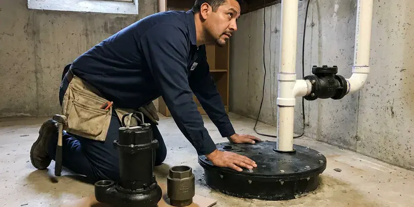

Basement Sump Pump Installation in Sioux City, IA
Keep storm runoff and rising groundwater out of your lower level with a correctly sized basement sump pump installed by KFR Plumbing in Sioux City, IA.
- Upfront Flat-Rate Pricing
- Fair Pricing
- Fast, Reliable Service
- Fast Sump Pump Installs

Expert Sump Pump Installation Services in Sioux City, IA.
Call now and a licensed plumber will size, set and test your new basement sump pump, in many cases the same day.
Professional Basement Sump Pump Installation in Sioux City, IA
KFR Plumbing understands the importance of a dry basement, especially for homes in Sioux City. Our team provides professional basement sump pump installation, making sure your property is protected from groundwater intrusion and flooding.
Our expertise includes:
- Comprehensive site evaluation for optimal pump placement.
- Perimeter drainage system integration
- Battery backup and water-powered secondary pump systems

Additional Plumbing Installation Services in Sioux City, IA
We install water heaters, pumps, lines, and fixtures across Sioux City, IA with precision workmanship that meets every local code.


Customers
Why Choose KFR Plumbing for Basement Sump Pump Installation in Sioux City, IA?
A basement sump pump only matters on the worst day of the year, so we install it like that day is coming. We use quality pumps, proper check valves and discharge routing that stops water from cycling back into the pit.
- Backup Ready, Battery backup pumps keep running when severe storms knock out power.
- Flood Prevention, A properly installed sump pump prevents costly water damage to your basement and its contents.
- Quality Equipment, We install only long-lasting, high-performance sump pumps from trusted manufacturers.
Citywide Coverage
We install basement sump pumps in every part of Sioux City, from older homes with partial cellars to newer custom builds with walkout lower levels. Our trucks are stocked with pit liners, pumps and PVC fittings so we can finish most jobs in one trip.
Experienced Team
The KFR Plumbing team is made up of licensed and insured professionals focused on precision and customer satisfaction. We take pride in our workmanship, making sure every basement sump pump installation meets our rigorous standards.
Safety-First Approach
Our installation process includes thorough checks for proper operation and compliance with all Iowa safety standards. You can trust KFR Plumbing to provide a safe and reliable basement sump pump system in Sioux City.
Trusted Certified Sioux City Plumbing Services Professionals
At KFR Plumbing, we take pride in providing certified plumbing services throughout Sioux City, IA. Backed by leading industry credentials, our experienced plumbers combine technical skill with genuine customer care. Whether it is repair, installation, or maintenance, we follow strict safety and quality standards to deliver lasting results you can trust.
Call Us Now PHCC Plumbing Contractor Recognition
PHCC Plumbing Contractor Recognition Better Business Bureau (BBB) Accreditation
Better Business Bureau (BBB) Accreditation Angi Certified Pro
Angi Certified Pro ISO 9001 Quality Management Certification
ISO 9001 Quality Management CertificationDependable Basement Sump Pump Installation Services in Sioux City, IA
Pedestal Sump Pump Installation in Sioux City
Pedestal sump pumps are an good choice for narrow or shallow sump pits, as their motor sits above the water level. This design makes them easier to maintain and can sometimes offer a longer lifespan because the motor stays out of the water. KFR Plumbing can properly install pedestal sump pumps in your Sioux City home, with the right sizing and setup for effective water removal without crowding your pit.

Sump Pump Basin and Discharge Line Installation in Sioux City
A complete sump pump system requires a properly installed basin and discharge line. We handle the excavation and placement of the sump basin, setting it at the lowest point of your basement floor so it collects water effectively. We also install the discharge line, making sure it is correctly sloped, sealed and routed away from your foundation to a suitable drainage area, so water does not find its way back into your Sioux City property.
Sump Pump Installation Cost Comparison in Sioux City, IA
Replacing a pump in an existing pit is the least expensive option, typically a few hundred dollars plus the pump. Digging a new pit through the slab adds labor for saw cutting, excavation and concrete patching. Adding a battery backup increases the total but often costs less than one cleanup after a flooded basement. We give you an itemized quote so you can compare a basic primary pump against a full primary and backup system before we begin.
Sump Pump Pit Installation in Sioux City, IA
A well-built sump pit is fundamental to an effective sump pump system. If your basement lacks a suitable pit or needs an upgrade, KFR Plumbing provides expert sump pit installation. We carefully excavate and prepare the pit to the correct dimensions and depth for proper drainage and pump function. This first step is critical for any new sump pump installation and prevents the sediment buildup that can damage the pump.
Emergency Sump Pump Installation in Sioux City, IA
If you are facing an urgent flooding threat or your existing sump pump has failed, KFR Plumbing offers emergency basement sump pump installation in Sioux City, IA. We know the urgency of protecting your home from water damage and will send a skilled plumber quickly to assess the situation and install a new, reliable sump pump. Do not let a failing pump lead to disaster.
Sump Pump Alarms and Smart Monitoring in Sioux City, IA
A high water alarm is an inexpensive part that gives you warning before water reaches the floor. We install standalone alarms or Wi-Fi monitors that send a text if the water level rises, the pump fails or power drops. These are popular with homeowners who travel or own second homes. We test the float trigger in front of you so you know how the alarm sounds.
Battery Backup Sump Pump Systems in Sioux City
Power outages during heavy storms can render a primary sump pump useless, leading to basement flooding. A battery backup sump pump provides crucial protection when the power goes out. We install dependable backup systems that activate automatically, keeping water moving even without electricity. This is an important safeguard for homes in Sioux City that lose power during storms, offering peace of mind in severe weather. We integrate these systems cleanly with your existing plumbing.

Primary Sump Pump Replacement in Sioux City
If your existing sump pump is old, failing or no longer adequate for your home, KFR Plumbing offers professional primary sump pump replacement. We can promptly remove your old unit and install a new, more efficient model, lowering the risk of future flooding. Our plumbers assess your current setup, recommend fitting replacements and handle a smooth changeover. This service is crucial for keeping effective flood protection in your Sioux City home.
Basement Sump Pump Installation Near Me in Sioux City, IA
When you search for 'basement sump pump installation near me' in Sioux City, you will find KFR Plumbing as your trusted local expert. We are familiar with the water drainage challenges and soil conditions around Sioux City, which lets us provide tailored solutions. Basements are standard in most Iowa homes, so sump pumps, floor drains, and foundation seepage are common service concerns. Our local presence means faster response times for your basement protection needs.
If you searched for a basement sump pump installer near me after spotting water on the floor, give us a call before the next storm rolls in. We keep pumps, liners and check valves stocked so we can respond quickly. Most installs in existing pits are finished in a few hours.
KFR Plumbing at a Glance
- Licensed and insured plumbers serving Sioux City, IA
- 24/7 emergency service with same-day scheduling
- Clear written estimates, no hidden fees
- 4.8-star rated by 620+ Iowa customers
Sioux City Map
Sioux City Information
- Population
- 85,727
- Area codes
- 712/605/507
- Service area
- Sioux City and communities within 40 miles
- Nearby
- Council Bluffs, Waukee, Ames, Urbandale
For homes in Sioux City, IA, a basement sump pump is important because heavy rain, saturated soil and hydrostatic pressure can all push water toward your foundation.
Expert Services
Trust our professionals for reliable KFR Plumbing solutions in Sioux City, IA.
Our Specialized Plumbing Services in Sioux City, IA
At KFR Plumbing, we provide a complete range of plumbing services across Sioux City, IA. From leak detection to full system installations, our team ensures fast, precise, and affordable service for both residential and commercial properties. Explore our core services below:


How Our Basement Sump Pump Installation Process Works in Sioux City, IA
KFR Plumbing follows a clear, systematic approach to basement sump pump installation, delivering a high-quality and reliable system for your Sioux City, IA home.
Request a Quote
Contact KFR Plumbing by calling (515) 308-3583 to schedule an on-site consultation. We will discuss your needs and provide a clear, transparent quote for your basement sump pump installation.
Site Assessment
Our expert plumbers will visit your Sioux City home to assess your basement's layout, existing drainage and likely water entry points. This helps us recommend the right sump pump system.
Professional Installation
We handle the entire installation, including sump pit excavation, pump placement and discharge line connections. Our team ensures all work complies with local Iowa codes and best practices.
Frequently Asked Questions About Basement Sump Pump Installation in Sioux City
Replacing a pump in an existing pit typically runs $500 to $1,200 including the pump and check valve. Installing a new pit through the slab usually falls between $1,500 and $3,500, and adding a battery backup adds about $600 to $1,500.
KFR Plumbing offers a full warranty on our basement sump pump installations, covering both parts and labor. The specific warranty period will be spelled out in your service agreement. We stand behind our work and the quality of the products we install in your Sioux City home.
Manufacturer warranties typically range from 3 to 5 years on quality cast iron pumps. We also back our installation labor, and we will walk you through the exact coverage for the model you choose.
A submersible sump pump sits entirely within the sump pit, making it quieter and less obtrusive. A pedestal sump pump has its motor above the pit, making it easier to access for maintenance and usually more affordable. Both types are effective for removing water from your basement.
Older sewer systems can back up during heavy storms, and backwater valves help keep sewage out of basement floor drains. Because storms and power outages tend to arrive together, a battery backup sump pump is strongly recommended. It offers crucial protection by switching on automatically when the main power fails, so your basement stays dry even without electricity. It is a smart investment for peace of mind.
Water heater replacements, repipes, new fixtures, and sewer line work commonly require a permit and an inspection. In many areas, a plumbing permit is required for new sump pump installations or significant replacements so the work meets local building codes. KFR Plumbing is familiar with local permitting requirements in Sioux City and can help you obtain the necessary permits so your installation is compliant.
It is recommended to test your sump pump every 2 to 3 months, especially before and after the rainy season. Simply pour a bucket of water into the sump pit to make sure the pump activates, drains the water and shuts off properly. Regular testing helps identify issues early.
A primary sump pump is your main defense against basement flooding, designed to handle everyday water removal. A secondary sump pump, often a battery-powered backup, serves as an emergency system that kicks on if the primary pump fails, loses power or is overwhelmed by excess water. Both work together for maximum protection.
What People Are Saying About Our Plumbing Experts?

Mark T.
When our office needed drain cleaning, KFR Plumbing provided quick, reliable service. The plumber arrived on time and made sure every drain flowed perfectly before leaving. Very satisfied.
Drain Cleaning · Urbandale, IA
Daniel K.
A pipe burst at 11 pm and they actually answered. The plumber showed up within the hour, shut everything down, and had us back to normal the next morning. Could not ask for more.
Emergency Plumbing · Council Bluffs, IA
Sofia M.
Two new toilets installed in one visit, no mess left behind, and the tech even adjusted a faucet he noticed was dripping. Fair pricing and really friendly.
Toilet Installation · Urbandale, IA
Emily R.
I called KFR Plumbing for plumbing repair, and the technician was fast, polite, and thorough. They explained the problem clearly and fixed it the same day. I will definitely hire them again. Highly recommended!
Plumbing Repair · West Des Moines, IA
Robert G.
The trenchless sewer replacement saved our front yard. They walked us through the camera inspection footage first so we knew exactly what we were paying for.
Sewer Line Replacement · Waukee, IALaura S.
I scheduled a water heater replacement, and the team made the process smooth and affordable. The new unit works perfectly, and they cleaned up after completing the job.
Water Heater Replacement · Urbandale, IA